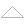

Multi lecture Tutorial Demo
Kurt Nørmark
Department of Computer Science, Aalborg University, Denmark
Title page
Abstract
LECTURE 1 OF MULTI DEMO
1.
Section one
LECTURE 2 OF MULTI DEMO
2.
Section two
3.
Section three
LECTURE 3 OF MULTI DEMO
4.
Section four
Generated: Monday November 14, 2011, 09:22:36

")